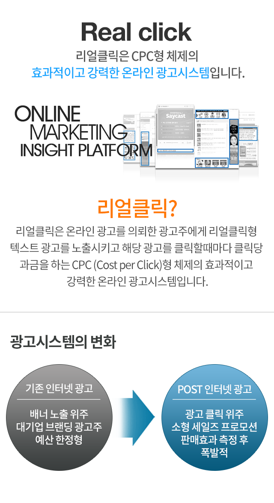
리얼클릭 비지니스모델 특징
확실한 메시지 텍스트로 타겟 고객에게 호소
리얼클릭은 현란하고 복잡한 시각으로 네티즌의 시선을 잡아 놓는 광고가 아니라, 지정된 광고 박스 안에 있는 광고 카피를 보고 클릭이 되기 때문에 광고주가 원하는 것보다 정확한 메시지로 분명하게 고객에게 다가갈 수 있습니다.
직관적인 클릭 유도
광고주에게 유용한 클릭이란 클릭을 하는 사용자가 얼마나 광고에 대한 인지를 하고 들어오느냐 아니냐에 의해 크게 좌우됩니다.광고 상품에 대한 정보를 텍스트 카피를 통해 정확하고 직관적인 클릭을 유도 함으로써 좀 더 확실하게 정제되고 걸러진 충성고객이 유입될 수 있습니다.
관심있는 고객으로의 접근
검색 등의 통로를 통해 찾아오는 고객을 기다리는 것은 수동적인 방법 입니다. 시장 확장을 위해서는 직접 잠재 고객이 이용하는 공간으로 찾아가 직접 만나는 것이 무척 중요합니다. 그래서 리얼클릭은 여러 제휴 매체사를 통해 온라인 광고를 통합적으로 관리/운영할 수 있는 시스템을 구축함으로써 더욱 간편하고 효율적으로 온라인 마케팅을 할 수 있게 최선의 노력을 다하고 있습니다.
리얼클릭 시스템 특징
NO FTP
리얼클릭은 각 제휴 매체사로 보내지는 광고 데이터 전송에있어 FTP를 사용하지 않아 설치가 간단하고, 방화벽과 해킹의 위협으로부터 자유로울 수 있습니다.
NO CGI
리얼클릭은 각 제휴 매체사 서버의 CGI를 사용하지 않기 때문에, 진행광고 수정이 실시간으로 이루어지며, 진행 매체사의 웹서버에는 전혀 부담을 주지 않습니다..
NO IFRAME
리얼클릭은 각 매체사와의 제휴 진행 시 IFRAME을 사용하지 않을 수 있기 때문에 진행 인터넷 사이트 레이아웃에 손상이 가지 않는 자연스러운 디자인 구현이 가능합니다.
리얼클릭 광고 시스템

슬롯과 뱅크 개념
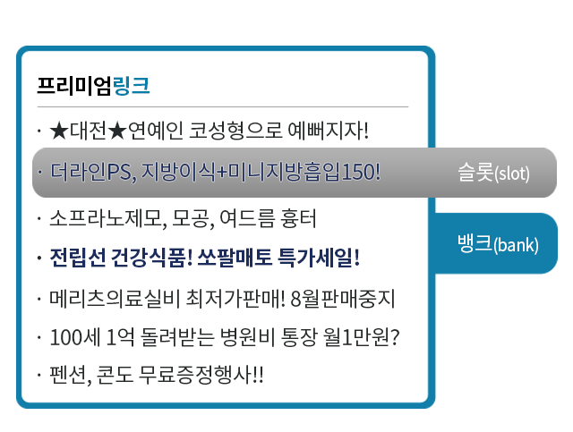
슬롯(slot)이란?
개별광고가 노출되는 영역이며 슬롯의 개수는 매체 지면마다 달라집니다. 이 영역은 고정되어 있는 것이 아니라 페이지뷰에 따라 랜덤하게 위치와 순위가 변경되므로 순위 쟁탈이 필요 없으며 개별 광고가 각각 동등하게 노출됩니다.
뱅크(bank)이란?
리얼클릭 광고 게재 지면의 슬롯들의 묶음이라 할 수 있습니다. 일부 과다한 노출이 발생하는 매체에서는 이를 조정하기 위하여 뱅크를 나누어 광고를 노출 시킵니다. 즉, n개의 뱅크를 선택하여 1/n으로 노출을 조정하여 무분별한 노출을 방지하고 효과적인 클릭이 발생되도록 노출을 조율 할 수 있는 시스템입니다.
리얼클릭 광고는 정확하고 직관적이며, 저비용, 고효율의 광고입니다. 클릭이 보장되는 리얼클릭 광고는 광고주 성향에 따라 개별적인 매체 선택 기능과 시간대별 광고 문구 변경이 자유롭습니다.
리얼클릭 광고는 정확하고 직관적이며, 저비용, 고효율의 광고입니다. 클릭이 보장되는 리얼클릭 광고는 광고주 성향에 따라 개별적인 매체 선택 기능과 시간대별 광고 문구 변경이 자유롭습니다.
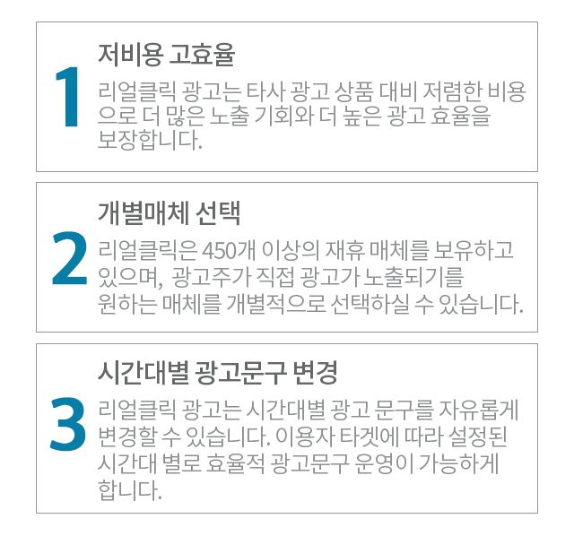
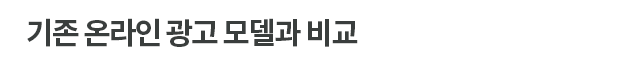
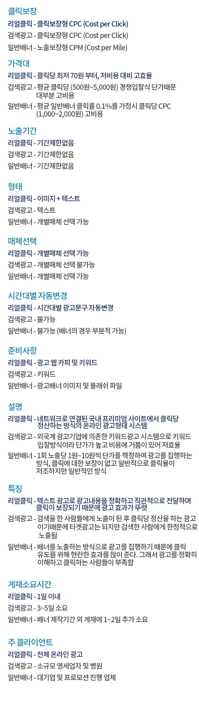
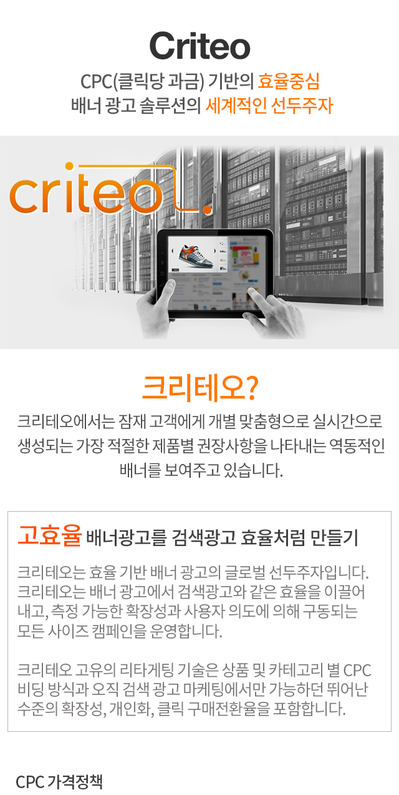
검색광고와 같이 크리테오 클릭후 구매전환 결과에 따라 돈을 지불하는 순수 CPC 모델을 제공합니다. 즉, 크리테오는 효율기반의 상품이기 때문에, 고객의 ROI를 증가시키기 위한 Cost of Sale 혹은 Cost per Lead 타겟의 달성을 통하여 캠페인의 결과를 측정합니다.
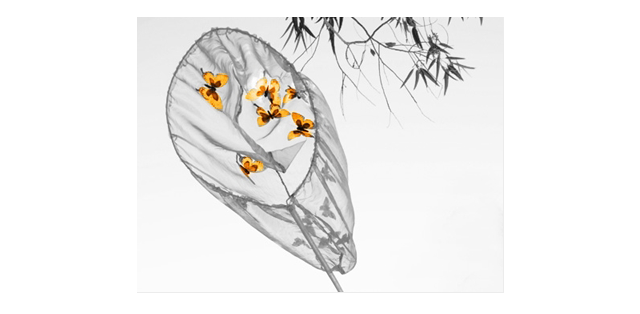
“실제로 크리테오 CPC 모델은 위험성이 적으며 높은 효율을 보장 합니다. 우리는 오직 강력한 선두 업체에게만 돈을 지불합니다.”
Corinne Poggi
Ecommerce Commercial Managger at Office Shoes.
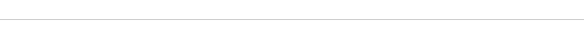
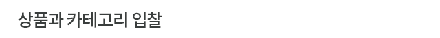
그들의 카테고리별 비용을 최적화 할 수 있도록 광고주는 각각의 맞춤형 상품 혹은 카테고리에서 CPC을 조정 할 수 있습니다.
- 상품 카테고리별로 CPC를 조정하고 설정
- 독자적인 기준에 따라 카테고리를 지정
- 전반적인 캠페인 COS 조정
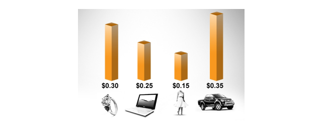
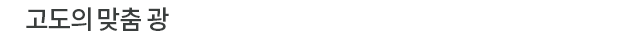
크리테오 다이나믹 배너는 매우 독특하며, 이는 다음의 탁월한 세가지 기능을 통해 가능합니다:
- 크리테오의 독보적인 제품 추천 기능
- 즉각 개인화된 메시지를 생성하는 효과
- 최고의 클릭율을 제공하는 트래픽, 텍스트구성 실시간
최적화 기능
그 결과 크리테오 광고를 통해 이루어지는 상품판매의 50% 이상이 이용자들이 광고주 사이트에서 한번도 본 적이 없는 상품에서 옵니다. 이는 브랜드 인지도를 향상시키며 이러한 추천상품의 검색이 50% 증가하고 있습니다.
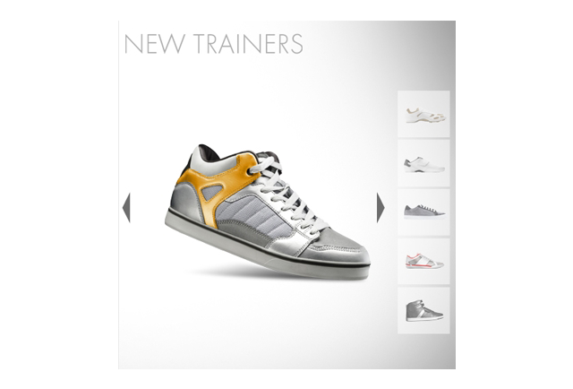
“크리테오 솔루션은 대단합니다. 다이나믹 배너를 통해 우리는 수백 건의 구매를 달성 했으며, 또한 무료 브랜딩을 통해 많은 이익을 얻을 수 있었습니다.”
Paul Doeman
Head of e-Commerce at Office Shoes.
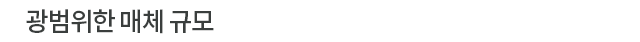
크리테오는 고객의 소비자를 찾기 위해 직접 광범위한 프리미엄 매체와 네트워크들과 함께 일하고 있습니다. 크리테오는 매년 천억번 이상의 배너를 노출하기 위해 직접적인 매체 제휴는 물론 최고의 광고 익스체인지 네트워크와 함께 진행하고 있습니다. 크리테오는 24시간 이내에 최소한 90%의 도달율을 달성함으로써, 광고주들이 주도적으로 소비자에게 노출 될 수 있도록 하고 있습니다. 크리테오는 파트너쉽 및 광고네트워크 제휴를 통해 잠재고객을 찾는 전문가가
되었습니다. 닐슨 연구에 따르면 크리테오 효율적인 도달율은 90%를 넘는다고 합니다.
“크리테오의 고품질 맞춤 광고는 MS 미디어 네트워크 상의 모든 광고주와 소비자에게 상당한 가치를 더하는 동시에 디지털 광고 기술 촉진을 가속화 하고 있습니다. 이는 크리테오 광고 네트워크의 모든 참여자들이 윈윈할 수 있게 해주죠.”
Laurent Delaporte
Vice President at MSN Advertjsing EMEA.
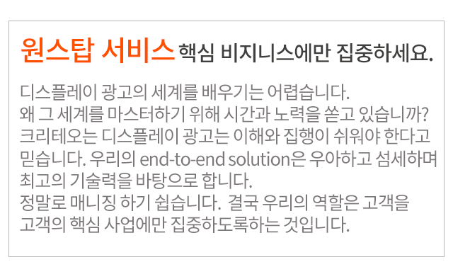
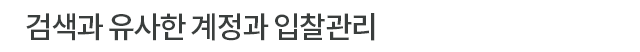
크리테오의 효율 최적화 플랫폼은 고객이 실시간으로 캠페인을 모니터링 하며 조절 할 수 있는 셀프서비스 기능을 제공 합니다. 광고주는 손쉽게 상품 카테고리 별로 내부 캠페인 진행 목표에 맞춰 CPC 입찰을 조절할 수 있습니다.
“모든 마케팅 활동은 그룹별 고객의 RFM메트릭스를 사용하는 엄격한 KPI에 맞춰 측정되는 테스트, 세부적인 조정, 최적화의 전략적 주기 내에서 이루어집니다.”
Jason Nelon
Head of Ecommerce and Maketing at Coast
크리테오의 포괄적인 end-to-end 플랫폼은 광고주가 가치있는 구매 고객에게 접근 할 수 있는 솔루션을 제공합니다.
“개인 맞춤형 리타겟팅은 아주 쉽게 말이 되는 부분이죠. 우리는 우리 사이트를 방문한 소비자를 찾을 수 있을 뿐만 아니라, 그들에게 자신의 관심 분야와 가장 관련성이 높은 제품에 대한 맞춤형 광고 또한 제공 할 수 있기 때문입니다.”
Yann Tanini
VP E-Commerce at Redcats USA
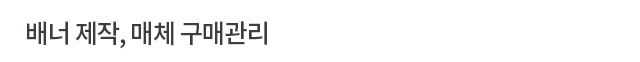
크리테오는 CPC 모델을 통해 진정한 ROI를 제공합니다. 배너 제작에 대한 비용이 없으며 매체 플래닝 및 구매에 대한 리스크가 전혀 없습니다. 크리테오는 CPM을 기준으로 가장 좋은 매체를 구매하고 있으며, 고객은 오직 PPC 비용 만을 지불합니다.
“크리테오 광고는고객과 더욱 더 돈독한 관계를 만들고 예산 책정도 쉽게 할 수 있습니다. 고객 획득의 아주 훌륭한 방안입니다. 크리테오는 자사 글로벌 전략의 큰 부분이 될 것입니다.”
Rav Dhaliwal
Multi-Channel Marketing Manager at New Look
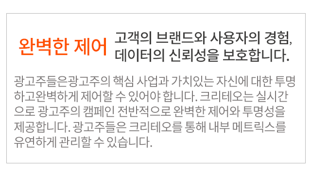

우리는 4,000여개 이상의 매체와 장기간 계약을 통해 광고주의 사업에 안전한 환경을 제공합니다. 크리테오는광고주의 배너가 어디에 노출되는지 정확히 알고 있습니다. 또한, 크리테오는 광고주의브랜드가 안전할 수 있는 세계적인 RTB기술, 선택적 인벤토리 선택, 주도적인 필터링, 빠른 수정 프로세스. 그리고 제 3자 보증 등을 보유하고 있습니다. 크리테오는 모든 광고 노출이 퀄리티있는 노출이며, 모든제반 사항을 준수하고 있고 정확히 의도된대로 노출되고
있음을 보장하는 Double Verify 파트너입니다.
“스카이 미디어는 크리테오와 약 2년간 같이 일했습니다. 크리테오는 신뢰할 수 있는 파트너이며, 크리테오의 리타게팅 광고는 우리의 프리미엄 고객에게 성공적으로 입증 되었습니다.”
Thomas O’Donnel
Advertising Technology and Partherships Manager at Sky
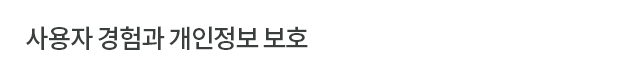
크리테오는 고객들에게 최상의 광고 서비스를 보장하기 위해 초기부터 깊은 관계를 맺습니다. 사용자 타겟팅은 크리테오의 고유한 솔루션으로, 크리테오는 광고주에게 사용자 노출정도, 노출 빈도 책정 및 개인 정보 보호 정책을 제어할 수 있도록 합니다. 반면 크리테오는 순수한 효율을 기반으로 하며, 크리테오의 기술과 비지니스 모델은 사용자에게 클릭을 절대 강요하게 만들지 않습니다. 크리테오는 업계에서 최초로 배너 상에 옵트아웃 아이콘을 제공 하였으며,
IAB 와 NAI의 적극적인 회원사입니다.
“크리테오는 우리의 고객들과 더 나아가 그들의 여행의 가치를 높일수 있는 타게팅 된 여행 정보를 Expedia에 제공함으로써 Expedia에 있어 중요한 작용을 하는것으로 입증 되었습니다. 우리가 관련성 높은 방법으로 고객들에게 접근하는 것이 Key라는 것을 명심하면서, 지난해에 걸쳐 고객들로부터의 답변들은 크리테오가 우리의 (고객들에 대한) 약속을 공유하고 있음을 보여줍니다.”
Simon Dupuy
Head of Online Advertjsing at Expedia

광고주 데이터 관리에 대한 어려움은 광고가 매력적인 매출원과 광고주의 마케팅에 대한 보완이 될 수 있는 반면, 광고가 잘못 관리 되면 브랜드와 사용자 경험을 손상시키기 때문입니다. 크리테오의 사용자 관히 솔루션은 광고주가 단지 모든 배너 마케팅 및 광고 활동에 집중할 수 있도록 돕습니다. 우리는고객 데이터의 노출 없이도, 항상 고객이 제 3자에게 광고 전에 마케팅을 제공할 수 있도록 우리는 그들의 공동 마케팅 또는 타사 광고를 볼 수 있도록
합니다.


 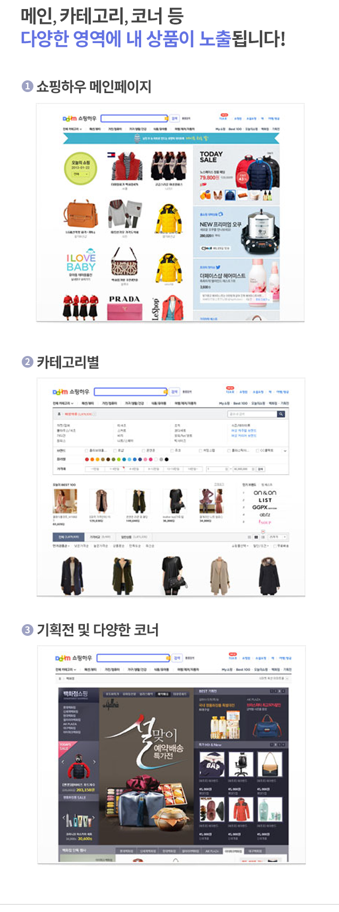
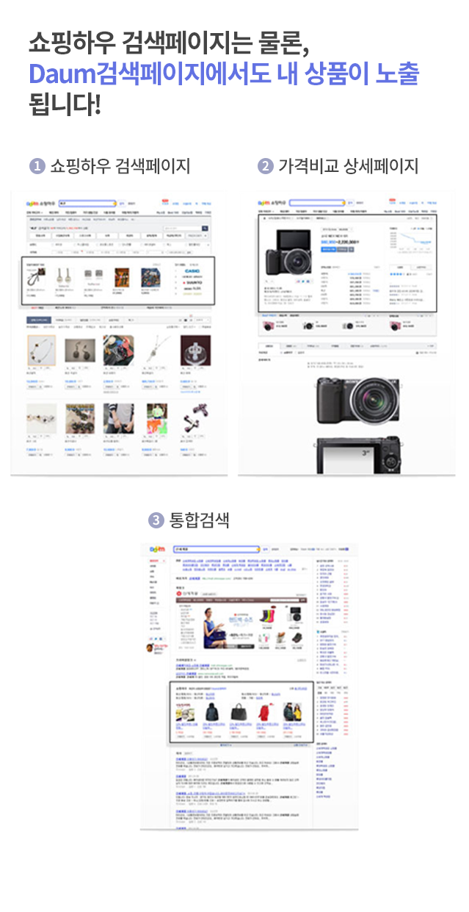
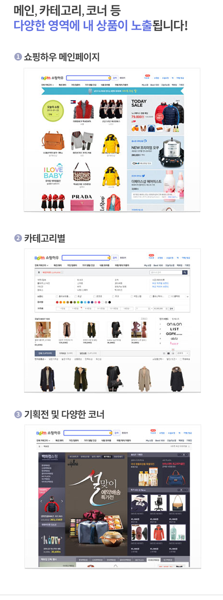
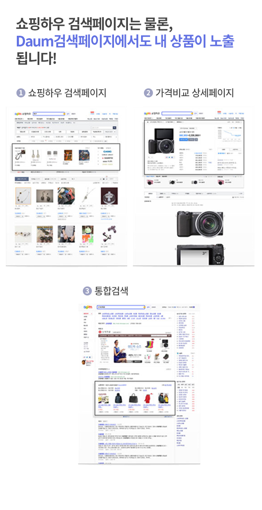